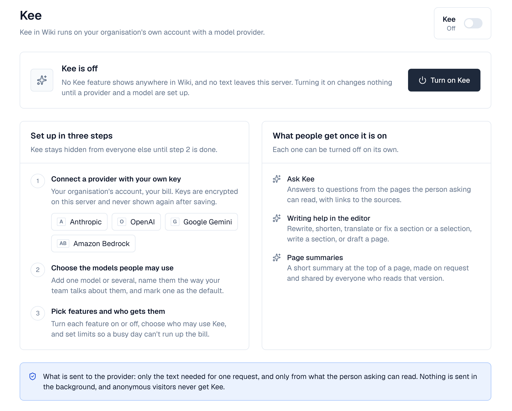

Kee is the Wiki's AI: writing help in the editor, page summaries and Ask Kee. It runs on your organisation's own account with a model provider: you bring the key and pay the provider directly. Nothing goes to Vectored. Kee is off until an administrator turns it on, and needs a Pro licence.
1. Where it is
Settings → Kee (marked New), for super admins: its providers, models, budget and usage report cover the whole installation, so Manage Kee settings (ai:manage) and See usage (ai:usage:read) are theirs only. The page has a switch for Kee at the top right and four tabs: Providers and models, Features and access, Limits and usage and Data handling.

2. Set up in three steps
- Turn Kee on — Turn on Kee, or the switch at the top right. Nothing shows to anyone yet: Kee stays hidden from everyone else until a provider works and a default model is chosen.
- Connect a provider and add models — On Providers and models: connect Anthropic, OpenAI, Google Gemini or Amazon Bedrock with your organisation's key, test it, save it, then add the models people may use and make one the default. See Providers and models.
- Pick features and who gets them — On Features and access: switch features on or off and set who may use Kee. On Limits and usage: a daily limit per person and a monthly budget. See Features and permissions and Limits and usage.
Until a provider has passed its connection test and a default model is set, the page says Kee is on, but nobody else sees it yet. Once both are done, people with the Use Kee permission see Kee's buttons at once, on every server.
3. Turning Kee off
The switch at the top right asks first, then turns Kee off everywhere: no Kee button, menu or panel shows to anyone and no request is sent. Providers, models and settings are kept, so turning it back on restores everything. To keep Kee away from one space only, its admins turn it off there: see Kee in a space.
4. What it needs
| What | Details |
|---|---|
| Licence | Pro or higher. A fallback model at another provider than the default's, and the usage export by person, need Enterprise. See Licensing |
| A provider account | Anthropic, OpenAI, Google Gemini or Amazon Bedrock, with access to at least one chat model |
| Outbound HTTPS from every server | To the provider's API (see Network) |
| A reverse proxy that doesn't hold answers back | Kee's answers arrive word by word; see Install the Wiki |
5. Kee's admin pages
| Page | What it covers |
|---|---|
| Providers and models | Connecting each provider, testing, the models people may use, the default and the fallback |
| Features and permissions | Feature switches and the Kee permissions grid |
| Limits and usage | Daily and per-minute limits, the monthly budget, the usage report and its CSV |
| Data handling | What is sent to the provider and when, what is kept on the server, Kee in a space, personal data |
| What Kee can read | The tools Ask Kee uses |
For people using Kee: Kee: AI in the Wiki.